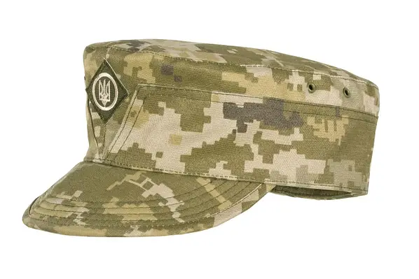
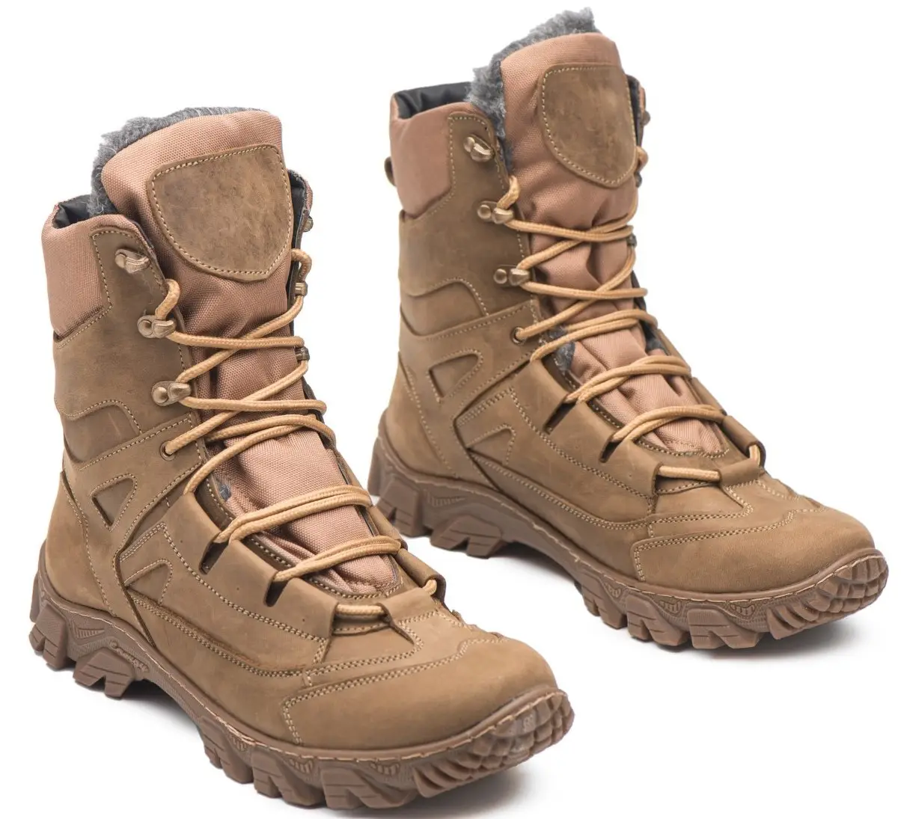
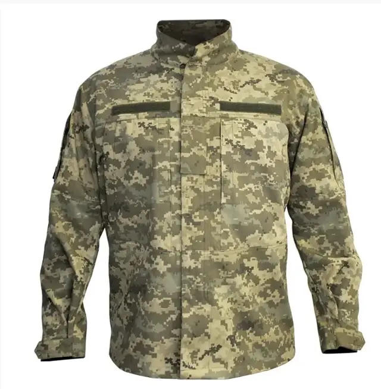

Мазепинка
- Колір: Олива
- Розмір: M, L, XL
- Ціна: 390 грн.
Кепка Мазепинка - головний убір, який недавно став статутним в
українській армії, але такий крій був характерний ще для частин часів революційних подій
1917-1920 років. Він зшитий з матеріалу зі складом 65% бавовна та 35% поліестер. Така пропорція
робить тканину гігроскопічною, приємною до тіла, вона не мнеться і довго не вицвітає. Колір
мазепинки - новий український камуфляж ММ-14. Невеликий козирок захищає від дощу і сонця.
Спереду пришита кокарда з тризубом.

Берці
- Колір: Койот
- Розмір: 41 - 46
- Ціна: 3200 грн.
Міцне і зручне взуття для тривалого використання у різних погодних
умовах. Виготовлені з високоякісних матеріалів, що забезпечують довговічність та комфорт при
носінні. Демісезонні берці у кольорі койот виконані з натурального нубуку вищого
гатунку. Підошва прошита та проклеєна, виготовлена з поліуретану, завдяки чому берці дуже
легкі, протектор не ковзкий, з ґрунтозачепами. Язичок берц прошитий практично до верху голені,
що попереджує попадання в берці вологи.

Кітель
- Колір: Олива
- Розмір: M, L, XL
- Ціна: 2000 грн
Класичний військовий кітель, виготовлений з якісних матеріалів для
максимальної зручності. Призначений для використання в польових умовах, має додаткові кишені для
зберігання необхідних речей. Статутний кітель ЗСУ має комірець-стійку, що закриває шию, що
захищає її від холоду і бруду. Застібається кітель на блискавку, її прикриває клапан з
липучками. Пошитий з зносостійкої тканини: 50% бавовна, 50% поліестер.